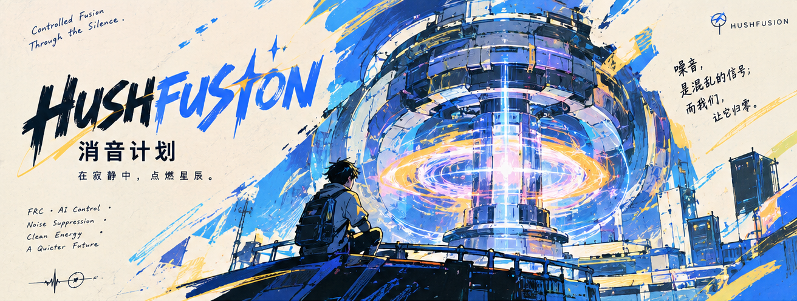

01Time-Varying Gravity◇
02AI Control◇
03Noise Suppression◇
04Clean Energy◇
05A Quieter Future◇
— 01 · 它要解决什么
从动力源到飞行器
聚变的难点不是「点火」,而是把混乱按住 —— 但消音只是第一段。这条路通向的是物质质量归零后的引力场相变。
- 01
时变引力场
本项目的技术逻辑。
Time-Varying Gravitational Field - 02
AI 智能控制
项目海报上列出的方向之一:电磁场持续学习的 AI 系统。
AI Control - 03
噪音抑制
动机层:要的是安静。它不是本项目的技术手段 —— 手段在时变引力场一侧。
Noise Suppression - 04
清洁能源
清洁能源方向。
Clean Energy - 05
更安静的将来
能源问题的解,不应该是更大的轰鸣,而是更少的噪声。
A Quieter Future
— 02 · Status
当前阶段
第一阶段「消音计划」处于概念阶段:技术逻辑与路线已确立,实验进展待立项后按归档发布。
Concept